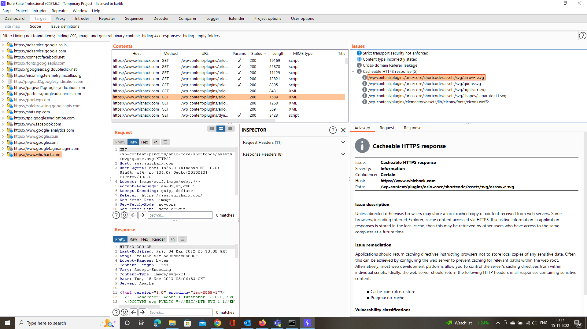
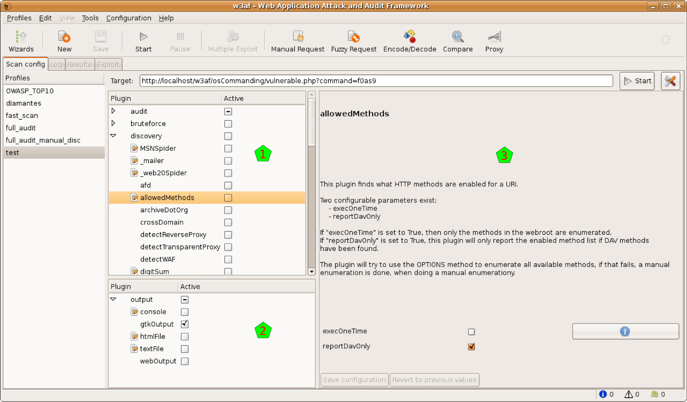
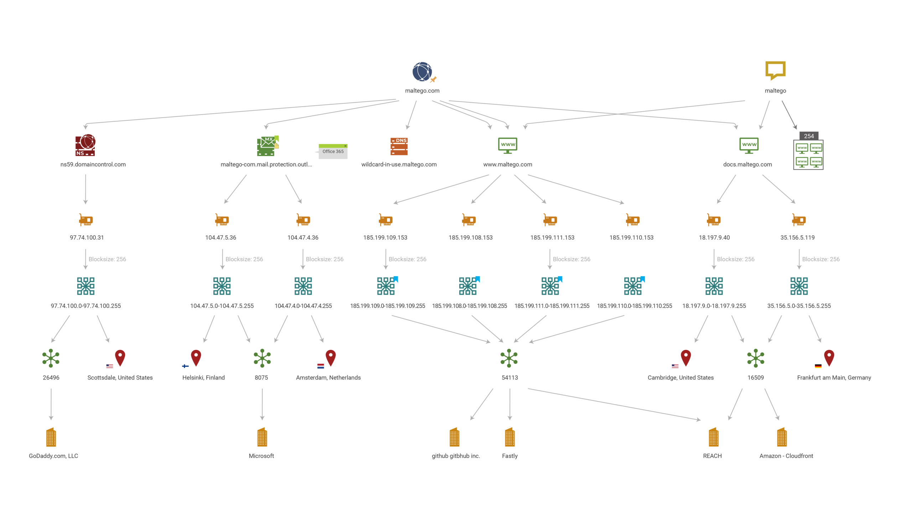

Scanning
Scanning is a set of procedures for
identifying live hosts, ports, and services, discovering the Operating
system and architecture of the target system, and Identifying
vulnerabilities and threats in the network. Scanning is used to create a
profile of the target organization. Hackers ,look for information , such as
computer names, IP addresses, user accounts, etc..
Wireshark (Lab name : Dhanush)
Wireshark is an open-source packet analyzer, which is used for education, analysis,
software development, communication protocol development, and network troubleshooting.
It is used to track the packets so that each one is filtered to meet our specific needs. It is commonly
called as a sniffer, network protocol analyzer, and network analyzer. It is also used by network
security engineers to examine security problems.
Wireshark is a free to use application which is used to apprehend the data back and forth. It is often
called as a free packet sniffer computer application. It puts the network card into an unselective mode,
i.e., to accept all the packets which it receives.

Angry IP scanner (Lab name : Dhanush)
Angry IP scanner is a freely available IP address and port scanner known for its
ease of use, simplicity, and speed. Angry IP scanners can scan IP addresses in any range and their
ports. It was designed to be cross-platform and very lightweight. Angry IP scanners can be freely copied
and used anywhere

BurpSuite (Lab name : Dhanush)
Burp Suite is an integrated platform for performing security testing of web
applications. Its various tools work seamlessly together to support the entire testing process, from
initial mapping and analysis of an application’s attack surface, through to finding and exploiting
security vulnerabilities.

W3AF
w3af is a Web Application Attack and Audit Framework. The project’s goal is to
create a framework to help you secure your web applications by finding and exploiting all web
application vulnerabilities.

Social Engineering Toolkit (Lab name : Pralay)
The Social-Engineer Toolkit is an open-source penetration testing framework
designed for social engineering. SET has a number of custom attack vectors that allow you to make a
believable attack quickly. SET is a product of TrustedSec, LLC – an information security consulting firm
located in Cleveland, Ohio.
